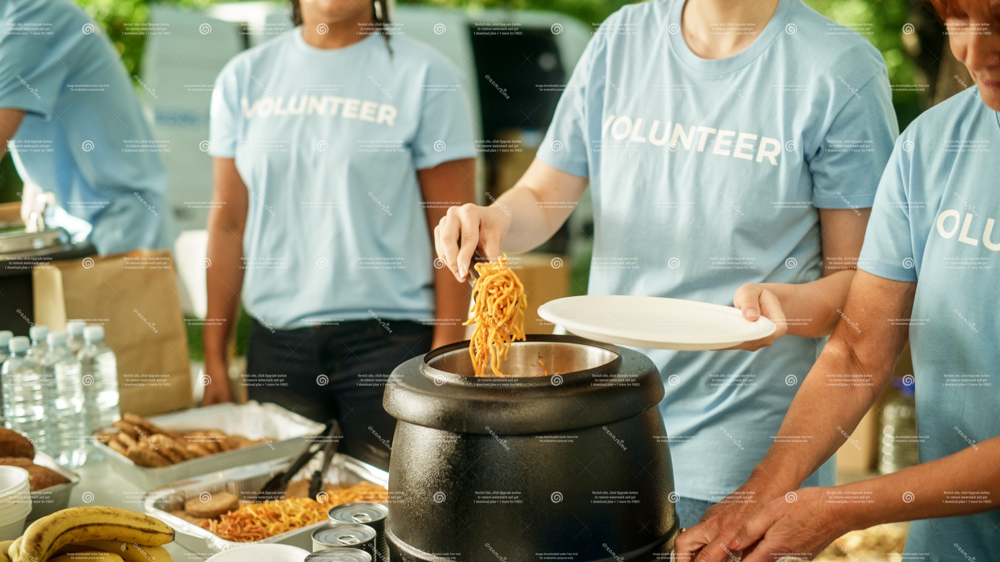

Volunteer
Get involved at food banks, community kitchens, gardens, and rescue organizations.


- Feeding America — volunteer opportunities
- VolunteerMatch — search hunger & food roles
- AmeriCorps — serve in your community
Get involved at food banks, community kitchens, gardens, and rescue organizations.